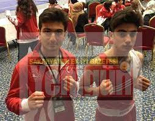

Balkan şampiyonası: Geçtiğimiz hafta Ankara’da yapılan “İpek Yolu 4’üncü Balkan Açık Wushu Şampiyonası’nda Arifiye Akburak Boks kulübü sporcuları bir şampiyonluk, bir üçüncülük elde etti. Hamza Kürşat Akburak’ın şampiyonluğu, Emin Sezer’in üçüncülüğü Arifiye ilçesinde sevinçle karşılandı.
Jiti’ de şampiyonluk: Arifiye Akburak Boks Kulübü sporcusu Hamza Kürşat Akburak, milli takım antrenörü hocası Sinan Akburak tarafından ringe çıkarıldı ve birbirinden zorlu müsabakalardan sonra Jiti dalında Balkan şampiyonu oldu.
Sanda’da üçüncülük: Akburak Kulübü ve Wushu milli takım antrenörü Sinan Akburak’ın ringe çıkardığı ikinci sporcusu Emin Sezer Sanda dalında Balkan üçüncülüğü elde etti.
Ödül töreni yapılacak

Arifiye Akburak Boks Kulübü başkanı Ferhat Akburak şampiyonluk ve üçüncülüğün başta Arifiye ilçesi olmak üzere spor camiasında memnunluk yarattığını belirterek; “Önümüzdeki günlerde Arifiye’de şampiyon ve üçüncü olan sporcularımız için ödül töreni düzenleyeceğiz. Başta milli takım antrenörümüz Sinan Akburak olmak üzere şampiyonumuz Hamza Kürşat Akburak ve üçüncümüz Emin Sezer’i tebrik ediyorum” şeklinde konuştu.
Haberin devamı için tıklayınız